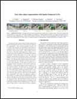

Fast video object segmentation with Spatio-Temporal GANs

We present a novel GAN architecture, FaSTGAN, to learn spatio-temporal object models over finite temporal windows. To achieve this, we concentrate all the heavy computational load to the training phase with two critics that extend cross-entropy $\mathcal{L}_\text{CE}$ enforce spatial $\mathcal{L}_\text{S}$ and temporal $\mathcal{L}_\text{T}$ mask consistency over the last K frames. Then at test time, we only use a relatively light regressor, which reduces the inference time considerably.

The proposed model consists of three main modules. A regressor $\phi$ trained on the binary segmentation task of separating the desired object from the background and two critics, $D_\text{S}$ and $D_\text{T}$, enforcing the model to produce semantically and temporally consistent estimates. At test time, we discard the critics and relay on the trained regressor $\phi$.

Sample sequences from YouTube-VOS (top 2), DAVIS17 (middle 2) and DAVIS16 (bottom
2). Leftmost image is the initial reference frame, the rest of the images are the predictions for the following frames.
BibTex
@article{caelles2019fast,
title={Fast video object segmentation with Spatio-Temporal GANs},
author={Caelles, Sergi and Pumarola, Albert and Moreno-Noguer, Francesc and Sanfeliu, Alberto and Van Gool, Luc},
journal={arXiv preprint arXiv:1903.12161},
year={2019}
}
Publications
2019
-

- Fast video object segmentation with Spatio-Temporal GANs
- S. Caelles*, A. Pumarola*, F. Moreno-Noguer, A. Sanfeliu and L. Van Gool
(*Equally contributed)
- arXiv, 2019.
-
@article{caelles2019fast,
title={Fast video object segmentation with Spatio-Temporal GANs},
author={Caelles, Sergi and Pumarola, Albert and Moreno-Noguer, Francesc and Sanfeliu, Alberto and Van Gool, Luc},
journal={arXiv preprint arXiv:1903.12161},
year={2019}
}
Acknowledgments
This work is supported in part by an Amazon Research Award, the Croucher Foundation and the Spanish MiNeCo under projects HuMoUR TIN2017-90086-R, ColRobTransp DPI2016-78957-R and Mar\'ia de Maeztu Seal of Excellence MDM-2016-0656. We also thank Nvidia for hardware donation under the GPU Grant Program.